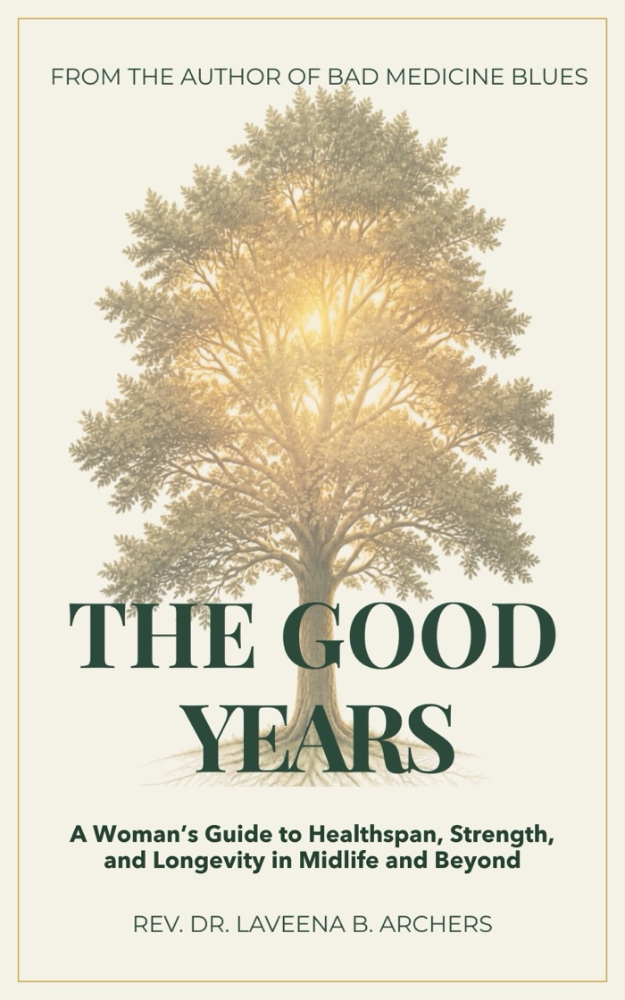

The Good Years
A Woman's Guide to Healthspan, Strength, and Longevity in Midlife and Beyond
You were promised more years. This book is about making them good ones. Almost every famous longevity book was written by a man, built on research done mostly in men, for a body that runs on a different timeline than yours.
Out now on Kindle at $9.99 and in paperback at $21.99.

If you have ever suspected the longevity conversation was not built for you, you were right.
Modern medicine got very good at keeping us alive, and far less good at keeping us well. The average American now spends more than twelve years alive but unwell, and that gap falls harder on women than on men.
Meanwhile the longevity industry turned aging into a luxury product: the scans, the panels, the peptides, the plunge pools. Very little of it has been tested in women at all, and a fair amount of it has been tested and did not hold up. This book says which is which.
Every claim tells you how good the evidence is.
Health books ask you to take their word for it. This one does not. Every substantive factual claim in these pages carries a tag showing what kind of evidence sits behind it, so you can weigh it yourself rather than trusting the author's confidence.
- Shown in people demonstrated in human trials.
- Associated only a correlation seen in people; cause not established.
- Animals only rodents, or cells in a dish, not living people.
- Tested, didn't hold a proper study was run and it failed. This is a finding, not a gap.
- Not studied nobody has properly tested it, or it is my own reasoning.
A dagger inside the tag flags evidence drawn from people who are not you: from men, or from women much older or younger. A demonstrated claim in the wrong population can mislead you more than an unstudied one, because it looks stronger than it is.
The count, in full: 639 tagged claims. 276 demonstrated in people, and only 245 of those in women like you. The book prints that arithmetic rather than hiding it, because a number you can check is worth more than a promise you cannot.
A look at the 36 chapters.
- Part I — The Real Story of Aging Why healthspan, not lifespan, is the number that matters, and how women got left out of the research.
- Part II — The Master Levers Muscle, food, sleep, movement, and connection: what is proven, and mostly free.
- Part III — A Woman's Inflection Points Perimenopause onward, and the hormone question answered honestly.
- Part IV — Cutting Through the Hype Supplements, biological-age tests, scans, peptides and plunges, weighed against the actual evidence.
- Part V — Aging on Your Own Terms Mindset, purpose, designing your later life, and a plan by the decade.
Out now on Amazon.
- The Good Years: the complete 36-chapter guide, five parts, written for a woman's body
- 639 claims, every one tagged for how good the evidence behind it actually is
- The free starter kit: the practical tools from the book, yours when you join the reader list
Kindle $9.99. Paperback $21.99. Both available now.
Get it on Amazon Or start with the free starter kitAlready read it? Leave an honest review. A sentence or two helps the next woman decide.
Book Two of the Root-Cause Guides.
- Book One — Bad Medicine Blues The natural, root-cause approach to women's energy, hormones, and vitality. See the book →
- Book Two — The Good Years A woman's guide to healthspan, strength, and longevity in midlife and beyond. You are here.
- Book Three — Worth Investigating A root-cause guide to reading your symptoms: what they mean, what to ask, and when to stop looking. See the book →
Your good years are not behind you.
Most of them are still ahead, and how you live them is still yours to decide.